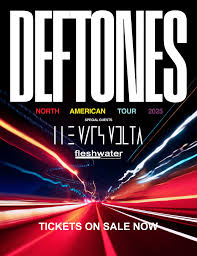

Despite all of the stuff I have going on this semester, I actually found some time -- and money -- to do something I really wanted to do.
This March, I'm attending a Deftones Concert! I really didn't think I would be able to see them in person, since they don't go on US tours that often. But somehow, I am.
I'm going with my girlfriend, and I'm really excited. So is she, maybe more than I am.
They're like her favorite band, so naturally she was ecstatic.
Anyways, I'm really looking forward to it, it's during my spring break so I won't have to miss much either.
I'm sure I will update this with how it went sometime.
Till next time.